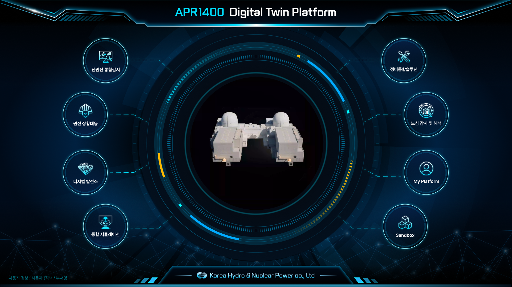
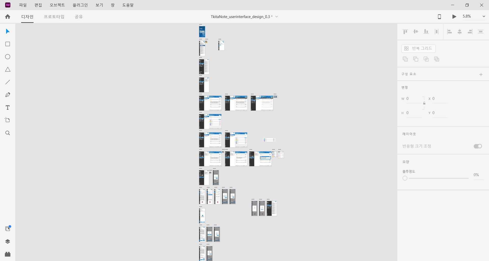
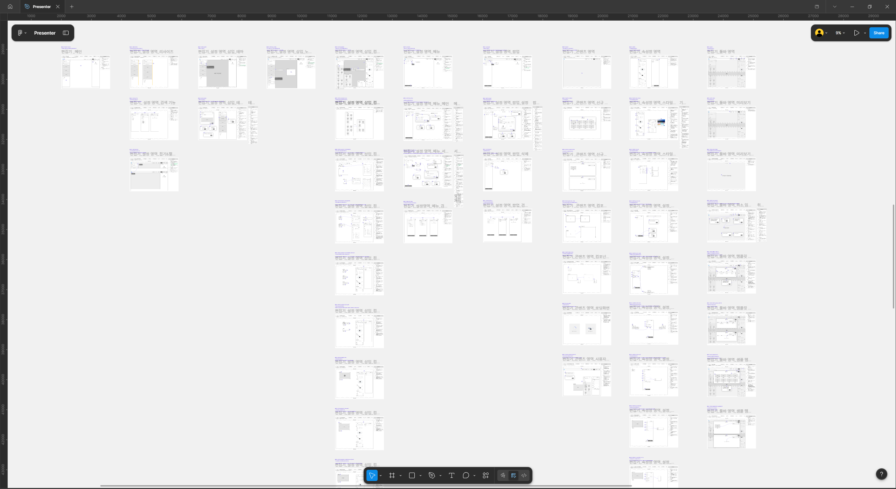

Web Publisher
이가슬
기획과 디자인의 맥락을 놓치지 않는 4년차 퍼블리셔입니다. 정교한 UI 구현은 물론, 자동화 워크플로우를 활용해 작업 공수를 줄이고 팀의 협업 생산성을 높이는 데 집중합니다.
- 시맨틱 마크업
- 웹 접근성(WAI-ARIA)
- 디자인 토큰화
- UI/UX QA 검증 프로세스
- 반응형 대응
경력
한밭대학교 컴퓨터공학과 졸업
- 2021.03 – 2021.12 (주)에어사운드 · 프론트엔드 웹 개발자
- 2022.07 – 현재 (주)스마트프로 · UI/UX 디자이너, 웹 퍼블리셔
대표 프로젝트
-

한국수력원자력 용역
디지털트윈
APR1400 디지털트윈 구축을 위한 가시화 및 Metaverse 운영 플랫폼
담당디자인 시스템 파운데이션 구축부터 다크모드 대응까지 마크업 전 과정
-

(주) 에어사운드 솔루션
티키타노트
AI 음성인식 기반 다자간 회의 자동 기록 및 관리 플랫폼
담당와이어프레임부터 상세 기능 화면까지 전체 마크업 구현
-

(주) 스마트프로 솔루션
VTS 솔루션 - 프레젠터
스마트프로 솔루션 프로그램 템플릿 구성 페이지
담당화면정의서 작성부터 리사이저·미리보기 등 인터랙션 마크업까지 전 과정
프로젝트 구성
-
-
-
-
-
-
-
대전 테크노파크, 한국화학연구원 파일럿
Online-Lab + Self-driving Lab 연계 구조의 작동 가능성 최소 수준 실증 근거 및 자료 확보용 콘텐츠
-
-
-
-
-
-
-
-
-
-
-
-


검색 결과가 없습니다.